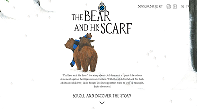
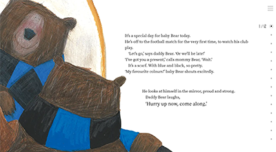
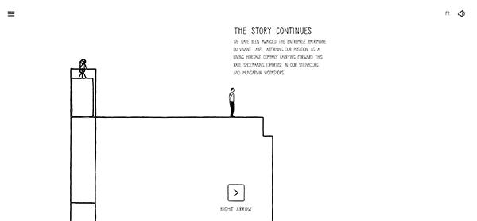
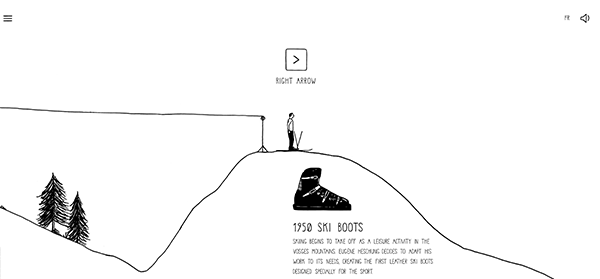
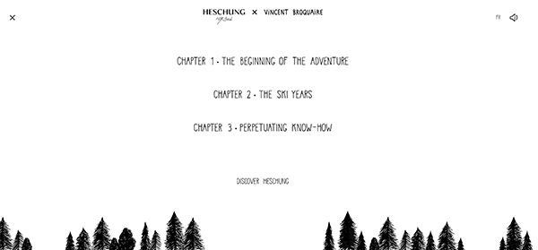

Site 1: The Bear and the Scarf

This is a playful website that is great for children. It’s like the modern day storybook displayed on one website. The website is simple as it displays one story about a bear and a scarf, and has cute illustrations and a great presentation of design. While scrolling down, the text pops up sentence by sentence, and the illustrations move. This makes the storybook pop, and children would love it.

The site navigation is fairly simple, as you just have to scroll down to get the story. On the right side there are dots to show how far along you are in the story, and it gives you the option to go back.
One problem with the site is that it only functions under full screen mode. If the window is set half-way, the illustrations do not display. The site is also pretty heavy, so for users with slower internet connection, it could be an issue.
The navigation is also simple in that the content is limited on the site. The site is centered at entertaining the user with a story, and has an option to download the press kit. It also provides links to social media, and contact info. The site also does not prompt the user for information. This is good because children most likely do not have social accounts, or emails, so they won't feel overwhelmed by the fact that they have to input some information. Besides that, there are no other features of the website. Since it isn’t complicated, the website is a pleasure to use.
See Site Here
Site 2: Heschung Animation Site

This site was created for entertaining purposes for a shoe company in France. The site does not stand alone, as the actual shoe company site displays the information about the footwear. This site’s primary purpose is to entertain the user with a story about the beginnings of the footwear company, and a cute story that dives deep into the shoemaker’s vision.

The site does not prompt the user for personal information, and it has a clear navigation. It’s simplistic, and the amount of space makes it easy to see the navigational buttons to move through the site.
One thing that is not so great about the site is that it moves pretty slow. Without knowing that there is an actual footwear site with this, I wouldn’t have known what the point of this site was. I kept looking at the site because of the cute animations and simplicity, but I didn’t know why I was on the site. If there was some bottom navigation bar, or discription, maybe I would understand the main idea faster.

Children would be entertained by this site because of the cute drawings, and the great sound effects that were placed. It is almost like a storybook site, but it is a story of a shoemaker.
See Site Here
Conclusion
Both of these sites compare to the point that they were meant as a storybook site. They were not created to receive information from the user, but to provide detail to information they are trying to showcase. The navigational patterns are also simple to move, as both of the sites are simplistic. The Bear and the Scarf site is easier to navigate, though. This is mostly because the site could be easily understood at first glance, while the Heschung took time to discover why the site exists. But all in all, these sites are very unique, as they don’t ask the user for information, and they have a simple purpose of entertaining the user.